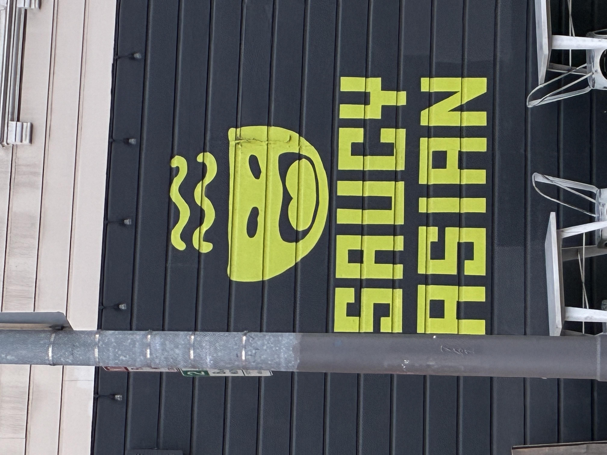
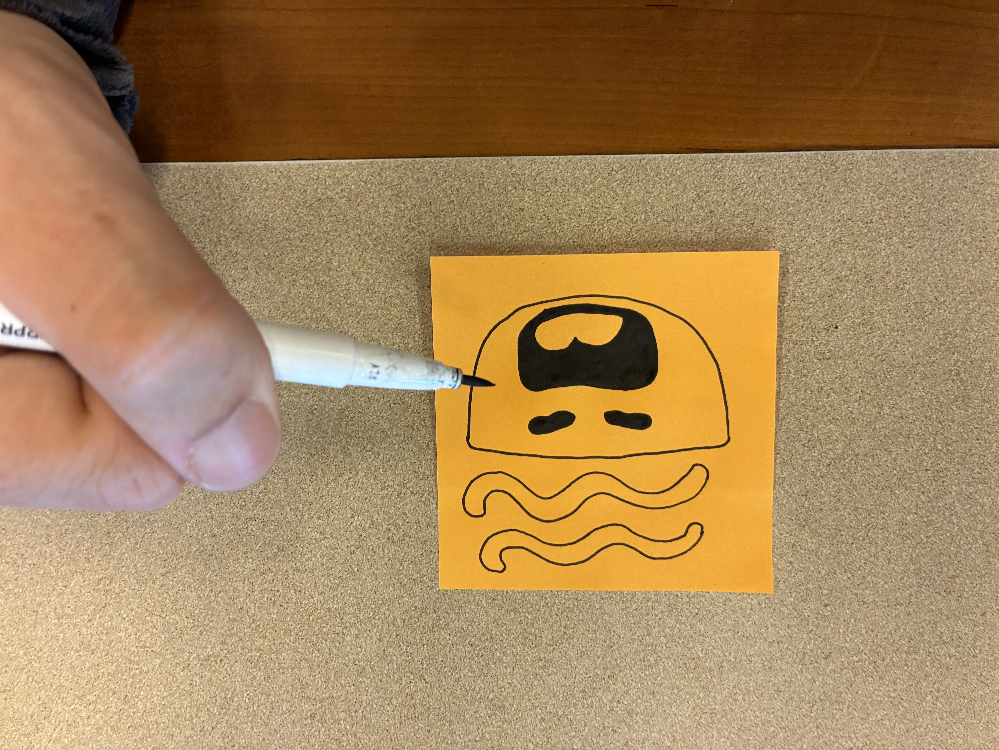
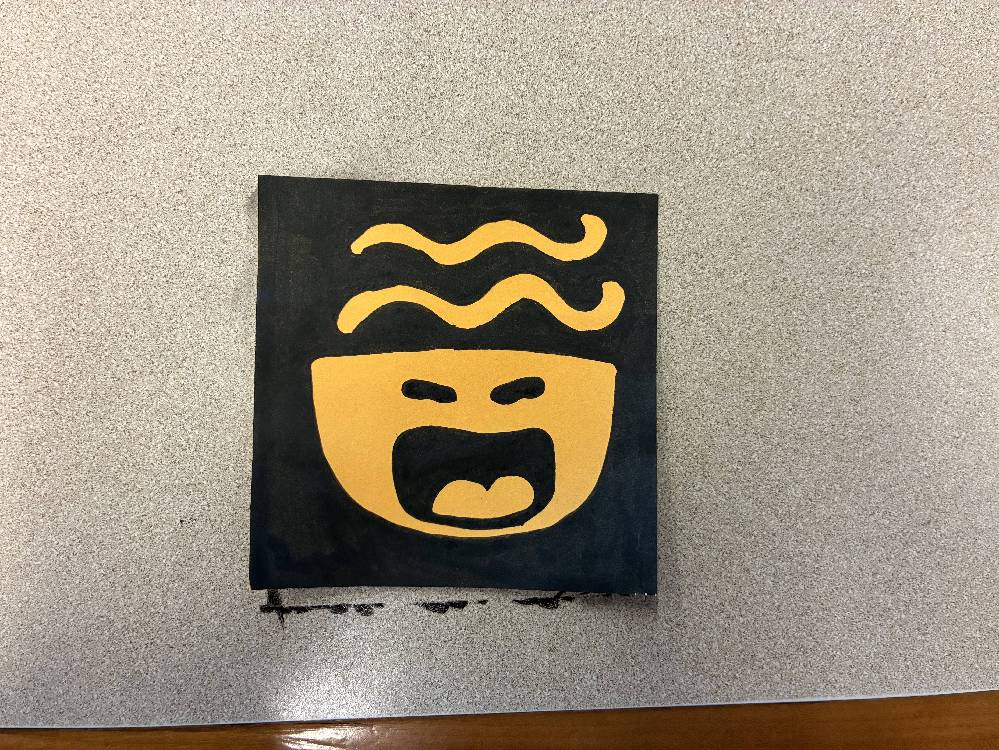
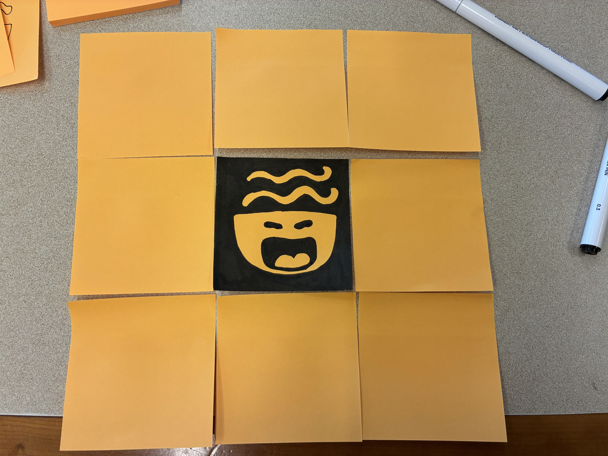
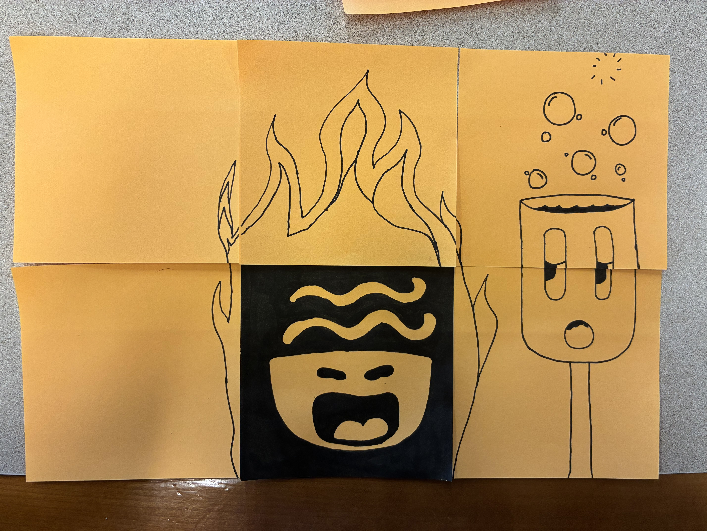
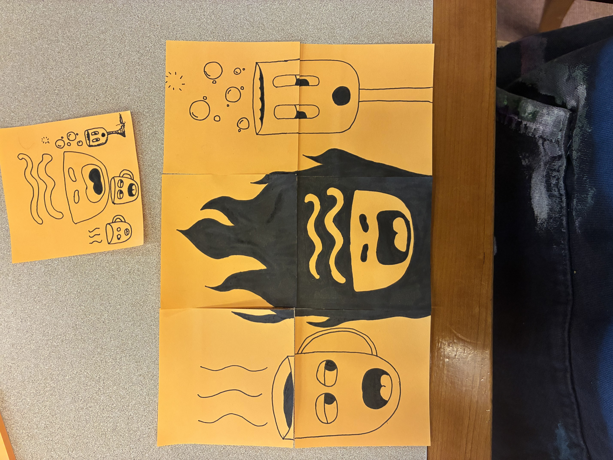
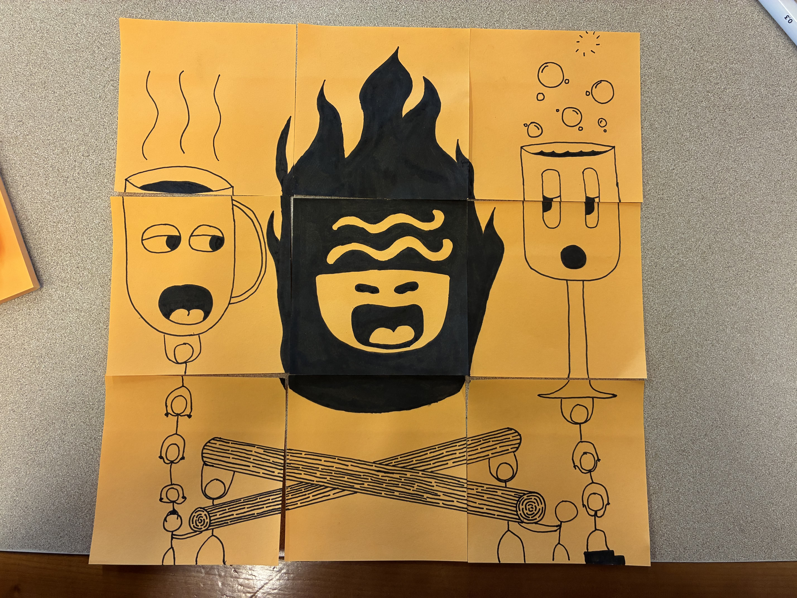
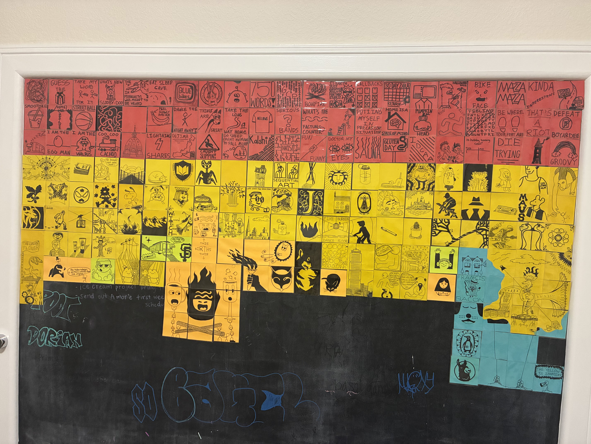

A reliable way into flow state
First, go for a walk and look for drawings in the wild.
Take a photo of something drawn that you see, like this.

Then, go home and copy the image down on a sticky note.


Finally, add 8 sticky notes around this drawing and "flesh out" the drawing in whatever way you see fit.

You have now just expanded the canvas of your drawing, so fill it in whatever way you would like.

And then some more.

A little more.

And thus, The Sticky Note Project was born:
